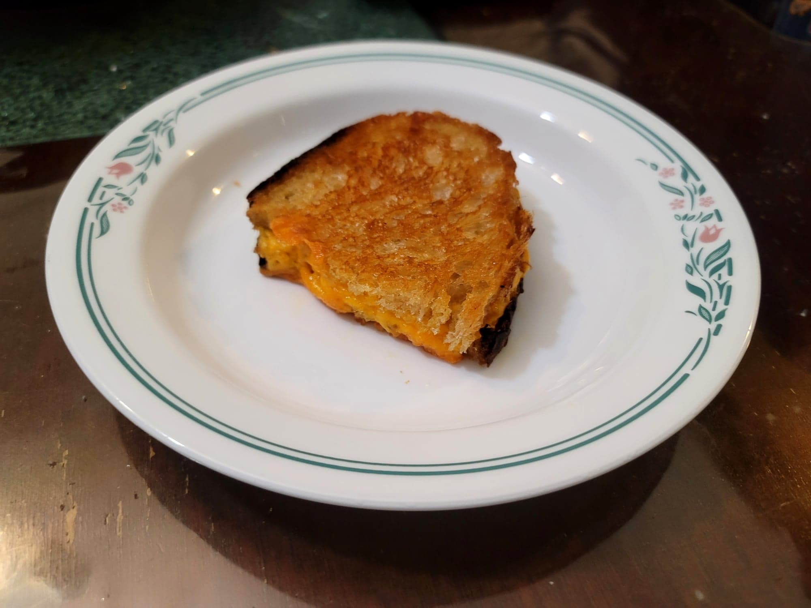

Grilled Cheese

Ingredients:
- 2 slices Sourdough bread or White bread
- American cheese or Cheddar cheese
- Butter
Instructions:
- Heat a pan over medium-low/medium.
- Slather butter onto one side of one slice of bread. Place onto the pan butter-side down. Then top with the cheese. Then slather butter onto one side of the other slice of bread and place it over the cheese, butter side up. Cook for about 4 minutes per side, or until golden. Serve immediately.